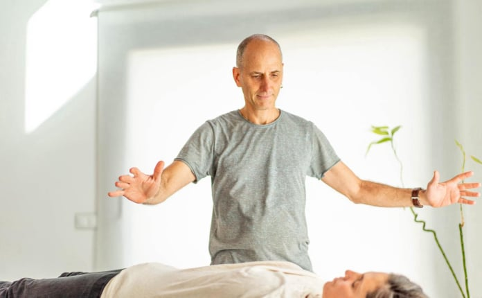
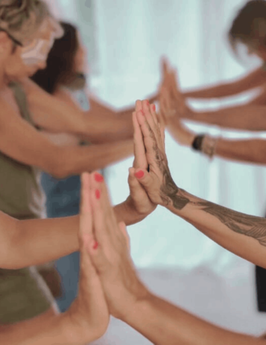
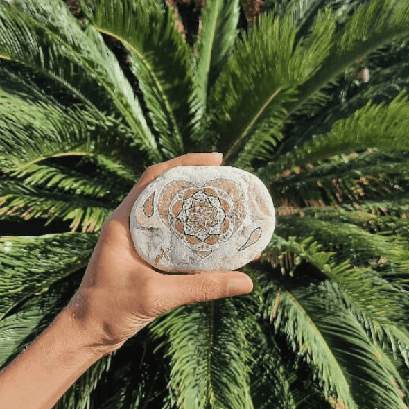
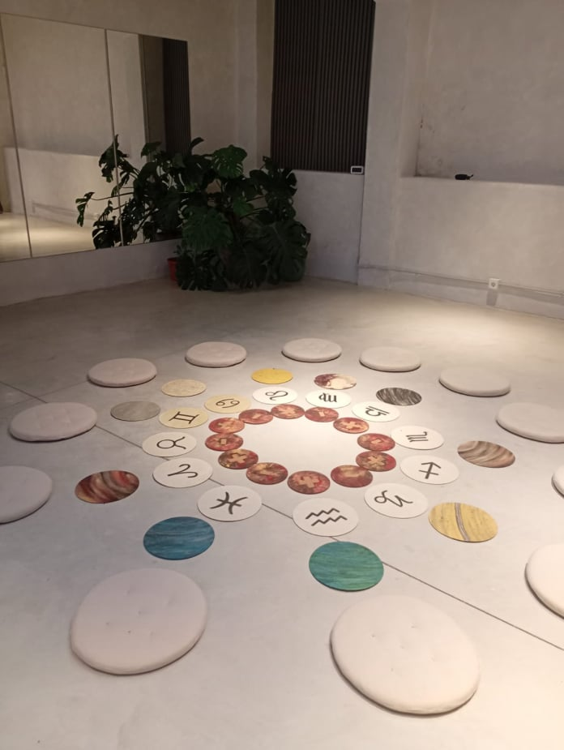

Offline Website MakerIntegra cuerpo, energía y consciencia a través de terapias holísticas transformadoras
La Chakana es el símbolo andino del puente cósmico, la integración de todos los planos de la existencia. En este espacio sagrado, honramos esa totalidad que eres.
Aquí no tratamos síntomas aislados: te acompañamos en un viaje de reconexión profunda donde cuerpo, energía, emoción, creatividad y consciencia dialogan y se transforman.
Cada sesión es una invitación a cruzar el puente hacia tu ser más auténtico, donde la sanación emerge desde la coherencia interna.
Aprende a habitar tu centro, incluso en medio de la tormenta. Cultiva serenidad desde adentro.
Recupera tu energía natural, libera bloqueos y siente tu cuerpo vibrante y presente.
Ordena el caos interno, toma decisiones desde tu esencia y confía en tu proceso.
Reconecta con tu propósito, tu creatividad y la versión más auténtica de ti.
Cada sesión es un espacio protegido donde puedes ser completamente tú. Trabajamos desde la presencia, la intuición y el respeto absoluto por tu singularidad.

• Alineación y armonización del flujo energético
• Autosanación
• Vitalidad y conciencia
• Modalidad: 4 Sesiones
• Coaching transpersonal
• Consciencia cuerpo / mente / emoción / energía
• Integración plena en el presente
• Modalidad: 8 Sesiones
• Acompañamiento / Seguimiento
• Construcción de hábitos saludables
• Logro de cambios sostenibles
• Incremento de la fuerza vital y la plenitud
• Descansos digestivos

• Los elementos de la naturaleza en balance
• 4 Encuentros: Tierra, Aire, Fuego, Agua
• Activamos y vivenciamos
• Música ancestral, arte, respiración y movimiento

• Expresión del inconsciente
• Creatividad como sanación
• Integración de sombras
• Expansión de consciencia

• Análisis sistémico de la carta natal
• Astrología como lenguaje simbólico
• Exploración arquetípica
• Proceso de autoconocimiento profundo
• Psique y cosmos
Sientes que hay algo más allá de lo que ves, y quieres explorarlo
Buscas sanación profunda, no solo alivio de síntomas
Te interesa integrar cuerpo, mente y espíritu en tu proceso
Valoras el acompañamiento personalizado y consciente
Estás list@ para mirarte con honestidad y compasión
Deseas recuperar tu poder creativo y tu voz auténtica
El viaje de mil millas comienza con un solo paso. Hoy puede ser ese día.
Es un espacio de escucha y guía donde exploramos cómo tu alimentación, tus hábitos cotidianos y tu mundo emocional pueden alinearse para que te sientas con más energía, presencia y equilibrio. Cada proceso es único: respetamos tu historia, tu ritmo y tus tiempos internos.
No trabajamos con dietas rígidas ni restricciones. Hablamos de una forma de alimentarte que nutra tu cuerpo de manera constante, incluyendo hábitos conscientes y posibles descansos digestivos suaves cuando sean necesarios. Buscamos que puedas reconocer qué te hace bien, cómo volver a tu centro cuando te desvías y que tu alimentación sea un sostén amoroso, no una presión.
Podemos co-crear ideas, orientaciones y sugerencias que se adapten a tu realidad, tus gustos y tu contexto. Más que imponer reglas externas, te acompaño a construir hábitos que tengan sentido para ti, para que tu forma de nutrirte sea sostenible, flexible y consciente en el tiempo.
Entendemos que lo que comes, cómo duermes y cómo vives está profundamente ligado a tus emociones, tus pensamientos y tu conexión con la naturaleza. Por eso, el acompañamiento integra mirada corporal, emocional y energética, ayudándote a reconectar con tu fuerza vital, regular tu sistema nervioso y habitar tu vida con mayor coherencia interna.
Una sesión suele durar entre 40 y 60 minutos. Sin embargo, el tiempo puede ajustarse según lo que estés atravesando para que el encuentro sea cómodo, profundo y respetuoso con tu proceso del momento.
No hay una duración fija. Puede ser un encuentro puntual para ordenar algo específico o un proceso más prolongado de varias sesiones. Lo iremos definiendo juntos según tus objetivos, tu disponibilidad y lo que vaya necesitando tu camino de transformación.
La frecuencia se acuerda en conjunto. Puede ser semanal, quincenal o en otro ritmo que te permita integrar lo trabajado sin sentir presión. Lo importante es que el acompañamiento te sostenga y que los cambios puedan enraizarse en tu día a día.
Sí. El enfoque de Chakana Puente es complementario y puede convivir con otros abordajes (médicos, psicológicos, energéticos, etc.). Siempre priorizamos tu bienestar integral y, si es necesario, te invitamos a que informes a tus otros profesionales de salud sobre este proceso.
Para personas que quieran relacionarse con su alimentación y su cuerpo de una forma más consciente, que deseen comprender la raíz de sus síntomas y patrones, y que sientan el llamado a vivir en mayor armonía consigo mismas y con la naturaleza que las sostiene. No hace falta “estar mal” para comenzar; basta con sentir que es momento de cuidarte de otra manera.
Offline Website Maker